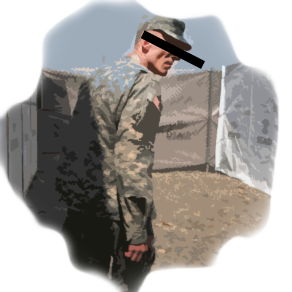

그녀의 계획
"저기에 하루에 두번씩 우리에게 밥을 주는 여자가 있어요" 그녀가 말했다. "그녀는 적어도 두 명의 남자가 데려와요. 아마도 그녀는 계속 우리에게 나갈 힌트를 알려주고 있는 것 같아요. 왜냐면 계속 저희를 동정하는 듯히 처다보더라고요."
"무슨 힌트요?"
"그 아줌마는 음식을 줄 때 막 신발을 닦는 척 하면서 왼쪽-왼쪽-오른쪽-오른쪽-왼쪽 이렇게 두드리더라고요. 아마 그게 사인인 것 같아요."
"아 알겠어"
"근데, 왜 아직 탈출 못한거야?"
그녀의 어깨가 눈에 띄게 축 처졌고, 아주 작게 속삭였다. " 했었어요."
뒤통수를 크게 한방 맞은 듯 했다. "뭐? 무슨일이었는데?"
"그 날은 운이 좋았죠. 그들은 그 날 문잠구는 걸 까먹었고, 그래서 전 막 달렸어요. 아무것도 몰랐기때문에 그냥 막 달렸어요 정말. 근데 앞에 군인이 서있는거에요. 그는 유니폼을 입고있었고, 굉장히 멋져보였어요. 아무래도 절 도와줄수 있을거라 생각했는데.."
"근데 그는 우리가 생각하는 그런 사람이 아니였어요."